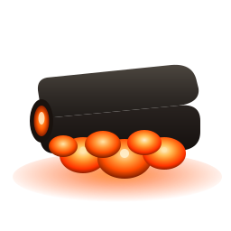

Ember · Session

You're signed in.
Your workspace is warm. Head back to the terminal — Ember is ready to pick up where you left off.
Safe to close this tab · press ⌘W
Ember · Session

Your workspace is warm. Head back to the terminal — Ember is ready to pick up where you left off.
Safe to close this tab · press ⌘W